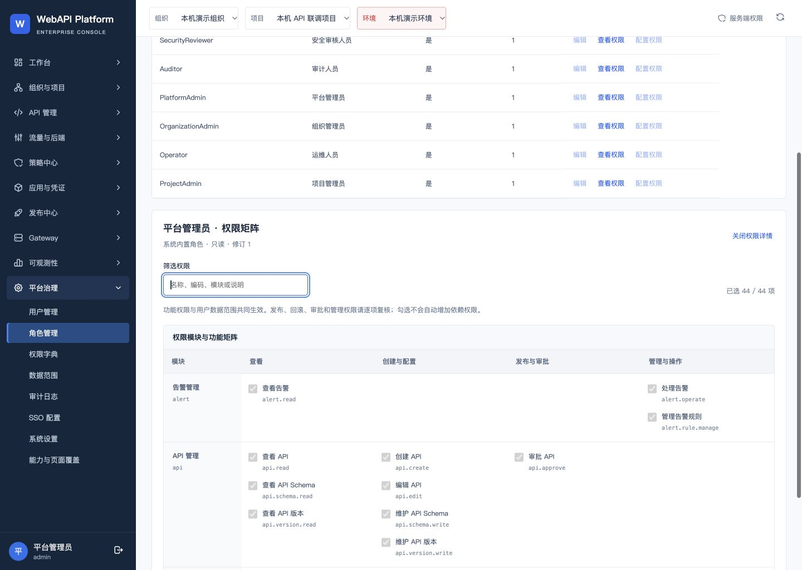
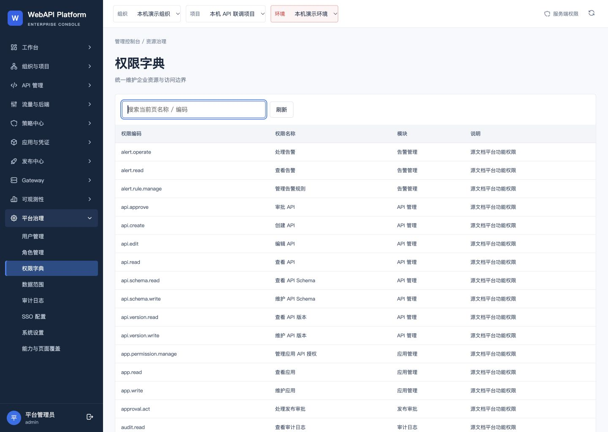
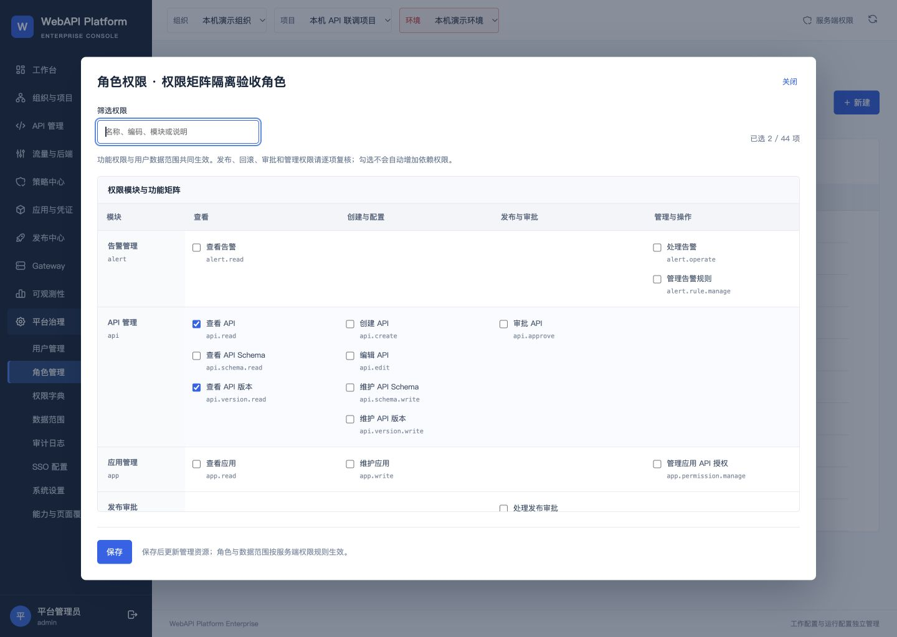
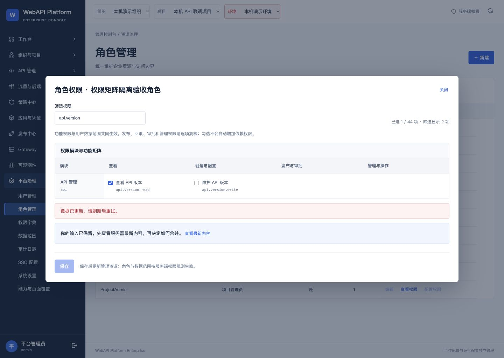

角色权限矩阵已安装到4192
2026-10-06 23:38 · 上海时间
打开角色管理 · 完整中文记录 · 验证回执
44项中文名称与真实权限代码
1259ba0已提交、合并、部署
232 + 124本批回归全部通过
21项固定构建副本浏览器检查，14项实际4192检查；真实412、隐藏勾选保存与筛选回车不提交均验证通过。
4192实际内置角色只读矩阵

4192实际中文权限字典

独立副本可编辑矩阵

独立副本真实角色并发冲突

数据与验收边界
33表、597个本地文件及33个旧归档保持；原4192无业务保存。双网关Ready，版本4／序列4。7+4卷冷备份、物理恢复及软件回退通过。15个服务运行；本机验收，未作企业实网或生产验收。后端706项为975c7b5历史证据，本批只重新构建并验证身份和运行接口。